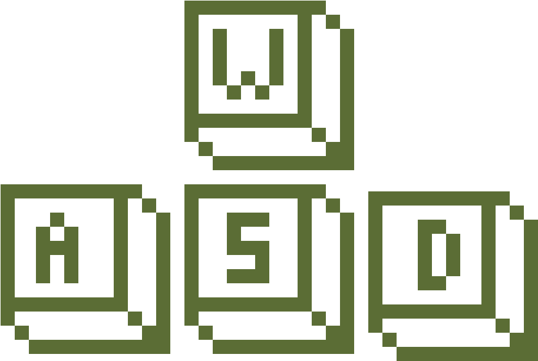

Вы проиграли !
О нет! в загоне появилась дырка и овечки разбежались! помогите фермеру загнать овечек обратно в загон
Кратко о игре: вам предстоит подбирать овечек и нести их обратно в загон на время, овечки могут выпадать, что усложняет игру. До того, как овечки покинут загон и не остановятся, вы не можете двигаться. Если хотите повысить сложность, нажмите: "уровень 2"
Для начала игры нажмите на кнопку "играть" или на "пробел"
Дождитесь загрузки и для игры и нажмите:
